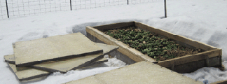

| Seed Starting
Starting plants inside gives you a head start on spring. In Maine, our spring is cold because of the effect of the ocean, so getting an early start makes a big difference. |
 |
||||||||||||||||
| Seed Starting A variety of seed starting trays are available. Cell trays in different sizes make starting seeds easy, as plants have their own growing space. Starting smaller numbers of several seeds saves space and makes succession planting less work. It is easy to care for a small tray of plants in a controlled situation, rather than starting them outside in a large bed. When the plants in the cells are large enough and sightly root bound, the plugs can be transplanted to a larger container like a 6-pack, pot or directly in the garden. Trays with long narrow planting cells also work well for starting some plants. In the full trays, I plant onions. Some of the long trays are cut into two or four pieces for smaller quantities of plants. Quick germinating and fast growing plants (cabbage, kale, mustards, lettuce) are planted together. In a slower germinating group are celery, parsley, basil and herbs. A warm group would be tomatoes, eggplants and peppers. Larger seeds like cucumbers and melons can be started in six packs. Peas, green beans and squash are started in 3”-4” pots. |
|||||||||||||||||
| Narrow trays (cut in 3 sections), plug tray, 4-pack, 6-pack and pots. |
|||||||||||||||||
| Potting Bench For planting seeds or transplanting seedlings a potting bench is helpful. It can be simple. Mine is a board covered with plastic on a wood stand in the basement. For starting seeds and transplanting to 6-packs, I mix a prepared seed starter mix 50/50 with my best garden soil. Planning ahead, I bring buckets of soil into the basement in late fall, or mulch an area that I can access when the ground is frozen in early spring to get more soil. Cold frames |
|||||||||||||||||
|  | |||||||||||||||||
| Seedlings in plug trays being transplanted to 6-pack trays. | |||||||||||||||||
| Spinach planted in late August, was eaten in the fall. It over-wintered in a cold frame under three feet of snow. On April 2 its still alive. As the weather warms, the spinach begins to grow. In the cool spring weather it produces abundant growth before the warmer temperatures causes it to bolt and go to flower and seed. |
|||||||||||||||||
| Boards were added to the beds making them taller to accommodate the growth of plants. Covers are added early to warm soil before planting. | |||||||||||||||||
| On the south side of our home, nestled in an area between small building bump-outs, I built two raised beds. This area is a protected micro climate and warms up faster than open areas. Cold tolerant plants, such as cabbages, kale, mustard greens and some herbs, were started in plug trays, transplanted to four-packs and pots and were planted in the beds at the end of March. In the front bed, soil was still to cold to plant. Cold frame covers can be vented or opened in warm weather. For unusually cold weather or snow, a second frame cover or old fleece blanket on top adds more protection. | |||||||||||||||||
| Plastic covered hoop greenhouses extend the growing season in spring and fall. When cold frames are used inside greenhouses they provide more protection from the cold and an even longer growing season. | |||||||||||||||||